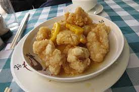

Fried Chicken With Lemon Sauce

Description
Fried chicken with lemon sauce is a classic Hong Kong/Cantonese dish made with, you guessed it, fried chicken and lemon sauce. Sweet and tasty and of course served with rice.
Ingredients
Fried chicken:
- 3pcs Chicken Thigh
- 1tsp Sugar
- 1/8tsp Salt
- 1/2tsp Chicken Powder
- 3tsp Oil
- 1/4tsp Ground White Pepper
- 3tsp Corn Starch
- 1tsp Shaosing Rice Wine
- 1pc Egg
- 60g Plain Flour
Lemon sauce:
- 35ml Lemon Juice
- 1/2pc Lemon Zest
- 60ml Water
- 8g Custard Powder
- 35g Sugar
- 1/8tsp Salt
Steps
- Mix the chicken with sugar, salt, chicken powder, pepper, oil and rice wine. Then also mix it with corn starch.
- Squeeze and slice the lemon. Mix the lemon and juice with water, sugar, salt and custard powder. Set aside as lemon sauce.
- Preheat the oil in medium heat.
- Cover the chicken with egg, then with flour.
- Fry the chicken in oil until it has a golden yellow colour. Cut it to slices and set aside.
- Heat the lemon sauce in medium heat. Stir it until it is sticky, then pour it on the chicken.
Return to homepage